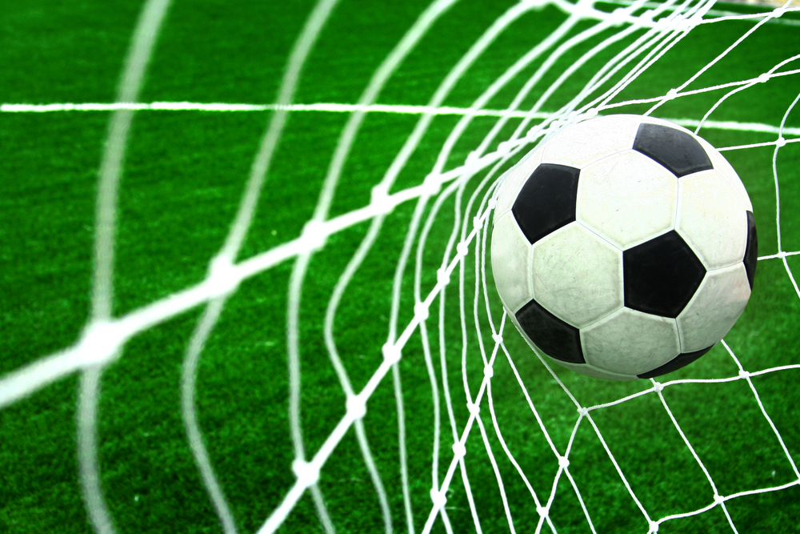
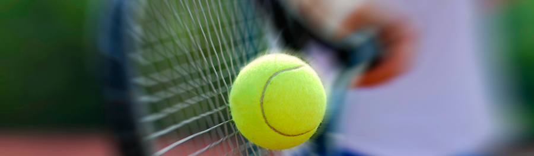
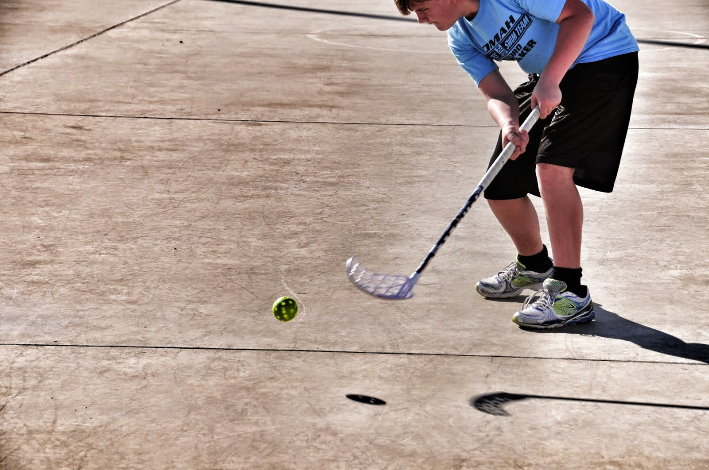

Fotball
Tennis
Innebandy

Jeg er takknemlig for sport!
Jeg har drevet med sport siden jeg var født og følger med på nesten alt av sport fortsatt.
På denne siden har jeg skrevet litt om hver sport, og hvis du er så lat at du ikke orker å scrolle,
kan du bare trykke på sportene i navigasjonsbaren
Football
Fotball er en ballidrett mellom to lag, hvert bestående av elleve spillere,
hvor formålet er å få ballen inn i motstanderlagets mål. Idretten utøves
på en rektangulær bane med ett mål i hver kortende, og det laget som har skåret
flest mål når spilletiden er ute, vinner kampen. Spilletiden er normalt nitti minutter.
Hvis begge lag har skåret like mange mål ved kampens slutt, erklæres kampen for uavgjort
eller avgjøres ved ekstraomganger eller straffesparkkonkurranse.

Tennis
Tennis er et innendørs og utendørs ballspill med strenget racket,
hvor man slår ballen frem og tilbake over et nett på tvers av en rektangulær bane.
Det spilles single begge kjønn (én mot én), double begge kjønn (to mot to) eller mixed double
(én mann og én kvinne per lag). Ballen skal returneres direkte (volley) eller etter én sprett.
De forskjellige underlagene som tennis spilles på er grus, grusen de spiller på kalles slippen,
og banen heter dyblonen, plen, «hard court» og teppe (innendørs). i dag er det en av verdens mest
utbredte idretter med noen av de best betalte idrettsutøvere som Roger Federer, Rafael Nadal og Novak Đoković

Innebandy
Innebandy er en lagsport som spilles med kølle av plast eller karbon på en 20 meter bred og 40 meter
lang bane med 50 cm høye vant. På banen skal det være oppmerket to målområder, med dimensjonene 4 x 5 meter,
2,85 meter fra kortsiden av banen. Inne i dette målområdet skal det være merket opp målgård hvor bare keeperen
har lov å være i. Den er 1 x 2.5 meter, 0,65 meter foran de bakre målområdelinjene. På banen har begge lag
fem utespillere og en målvakt. Ballen kan kun spilles med kølla, men hele kroppen unntatt armer og hode kan
brukes til å stoppe eller bevege ballen til seg selv. I Norge har Norges Bandyforbund over 25 000 medlemmer,
hvorav rundt 6 000 er lisensierte
